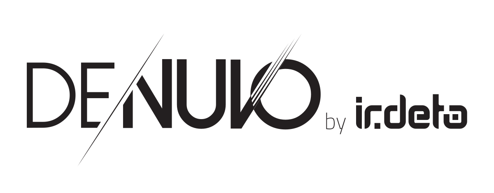

Denuvo Analysis
Foreword
This post is intended for educational purposes only. Denuvo is arguably the most successful digital rights management solution to have ever existed, and is therefore an interest to many. This blog contains a large amount of my personal notes and correspondence with other reverse engineers (see kudos) which contains information about the recent iterations of Denuvo, lots of which I haven’t seen shared publicly before.
I mean no harm towards Irdeto and thus certain information will be redacted from this post.
Denuvo

Denuvo is an anti-tamper and digital rights management system (DRM). It is primarily used to protect digital media such as video games from piracy and reverse engineering efforts. Unlike traditional DRM systems, Denuvo employs a wide range of unique techniques and checks to confirm the integrity of both the game’s code and licensed user.
The General Idea
The core idea behind Denuvo is nothing new. It can only be described as a semi-online DRM for reasons that will become clear shortly. The general idea is as follows:
(1) User boots program.exe for the first time.
(2) Before any original game code is executed, Denuvo will collect hardware identification information regarding the current system, and prepare it for sending over the internet.
(3) program.exe then sends this hardware information to a Denuvo hosted server. What occurs at the server is obviously a mystery, but it likely applies reversible mathematical functions to combine the “stolen constants” (more on those later) with the hardware information provided by program.exe. The server then sends this now mixed information, we will refer to this as “the license file”, back to program.exe.
(4) Once program.exe receives the license file, a local copy is created that program.exe can refer to on future boots; removing the need for another online request to be made (hence the use of “semi-online” earlier).
(5) program.exe will be redirected to the original entry point (OEP) and begin executing the actual game code. During this time, program.exe will collect hardware information at runtime and attempt to decrypt stolen constants from the license file. These now decrypted constants will then be used to execute “original game instructions”.
If it wasn’t made clear already, the game will effectively end up performing user integrity checks. This is due to the fact that if the hardware information collected at runtime is not the equal to that of which was used to create the license file on the Denuvo server, then an incorrect stolen constant will be decrypted and the game will likely suffer (most of the time this is a direct crash).
A More Technical Explanation
This section will investigate each protection mechanism and user integrity check more thoroughly. Remember, there is far more to Denuvo that what is outlined here.
General Idea Revisited
License File
When Denuvo is first added to a binary, certain functions in that game are selected to become “protected”. All this means is that the function itself will be executed inside of a virtual machine, and select parts of certain instructions will be removed entirely from the binary. The license file is simply all of these removed bytes combined together and combined with the user’s hardware identification via reversible mathematical functions. It is important that whatever operations are applied are reversible, otherwise the client would have no way of decrypting and getting the original constant.
License DWORDs
Since there are multiple stolen instructions, prior to handling execution over to the OEP, Denuvo will write select parts of the license file into DWORDs, scattered around the .vm section (.vm being the PE section which contains the VM code). Each DWORD, we will nick “License DWORD”, is effectively a single instruction that was removed from the binary, combined with the hardware identification information of the customer.
Encrypted Constant / Removed Instruction Example
In order to make the idea concrete, I will show an example of how instructions are “removed” from the binary. Assume we have the following function:
add(int, int):
push rbp
mov rbp, rsp
mov DWORD PTR [rbp-4], edi
mov DWORD PTR [rbp-8], esi
mov edx, DWORD PTR [rbp-4]
mov eax, DWORD PTR [rbp-8]
add eax, edx
pop rbp
ret
It is trivial to see that there exist parts of instructions that will never change once compiled. For instance:
mov DWORD PTR [rbp-4], edi
Here we are writing the contents of the 32-bit register, EDI, into [RBP-4]. In this case, Denuvo would strip the binary of the constant -4 and store it on their server. Now, the only way for anyone to access this constant, which would be required for a successful execution of add(int, int), would be to request a license file from Denuvo as that would contain the license DWORDs, which contain the encrypted constant -4 (recall that the license file contains the constants mixed with hardware identification). Furthermore, Denuvo will convert the entire function, add(int, int), into bytecode that only their virtual machine can understand. Present in this bytecode, there exists code which acts like a wrapper around the removed instruction. This wrapper is responsible for the following:
(1) Collect the corresponding hardware information at runtime (the specific hardware information that was mixed in with the constant).
(2) Read the corresponding license DWORD that contains the encrypted constant for this particular function.
(3) Perform a series of mathematical operations using the license DWORD and the hardware identification collected at runtime to retrieve the value of -4. This should be the inverse of whatever the server did.
(4) Execute the original instruction with the now decrypted constant.
Recall from a previous section, if the hardware identification collected at runtime does not align with that which was used on the Denuvo server to encrypt the constant, then (3) will likely yield a result that is not equal to -4; causing undefined behaviour.
User Integrity Checks
I will now highlight all of the vectors Denuvo use to verify the integrity of the system executing the protected binary. By the nature of the protection, at least one instance of each check must be sent to the server when requesting for a license file.
Pre-OEP Checks
After reading the previous section(s), you may be wondering what happens if a user’s hardware identification changes (e.g. Windows update, new CPU, etc). Denuvo account for this using special checks which execute just before handing control to the OEP. They will simply perform some constant decryptions but instead of using said constant to execute an instruction, they will check if it is equal to what it should be (these are the only checks that do this, everything else assumes that the decrypted constant is correct and acts accordingly). If the result is not as expected, Denuvo will delete the locally saved license file and request a new one from the Denuvo server; basically a repeat of the process described in The General Idea
KUSER_SHARED_DATA
KUSER_SHARED_DATA is a single page of, now read-only, memory (4096 bytes) that is mapped into every process running on a Windows machine. It contains information that processes may wish to access, such as the Windows Version, Windows Build Number, SystemTime, etc. A lot of the information it contains can be used to identify a machine, and therefore Denuvo make good use of it to aid in their needs.
Denuvo utilises the following fields:
- 0x026C : ULONG NtMajorVersion
- 0x02E8 : ULONG NumberOfPhysicalPages
- 0x02D0 : ULONG SuiteMask
- 0x0260 : ULONG NtBuildNumber
- 0x0264 : NT_PRODUCT_TYPE NtProductType
- 0x0268 : BOOLEAN ProductTypeIsValid
- 0x0270 : ULONG NtMinorVersion
- 0x0274 : BOOLEAN ProcessorFeatures [0x40]
- 0x026A : USHORT NativeProcessorArchitecture
- 0x03C0 : ULONG volatile ActiveProcessorCount
NOTE: These offsets are for 64-bit machines.
CPUID
The CPUID instruction is used to retrieve details about the processor. This is probably the most common method Denuvo uses to collect hardware information. And as will be shown later, great lengths are taken in order to protect its execution from tampering.
Denuvo makes use of the following parameters:
- EAX=0x1 : Processor Info and Feature Bits
- EAX=0x80000001 : Extended Processor Info and Feature Bits
- EAX=0x80000002, 0x80000003, 0x80000004 : Processor Brand String
SYSCALL
The SYSCALL instruction invokes an OS system-call handler at privilege level 0. You may think of it as a way for user mode programs to communicate and ask the kernel for services.
Denuvo makes use of a single parameter:
- 0x36 : NtQuerySystemInformation
NTDLL Checks
ntdll.dll is the “user-mode face of the windows kernel”. It basically offers a rich API that usermode applications may use to request the kernel to perform actions on their behalf. ntdll.dll is loaded into virtually every windows process by the Windows Loader and usually changes per Windows update; making it an ideal target for Denuvo.
NTDLL Function Checks
I didn’t look as deep into this as I should have. But it appears that Denuvo will identify the user based on bytes of certain functions located with ntdll.dll and their relative virtual address (RVA).
NTDLL Image Data Directory
As stated previously, ntdll.dll typically changes slightly per Windows Update / Version, so it makes sense why Denuvo would target its Image Data Directory. To be specific, the following fields are accessed:
- Export Directory RVA
- Export Directory Size
- Import Directory RVA
- Import Directory Size
- Resource Directory RVA
- Resource Directory Size
- Exception Directory RVA
- Exception Directory Size
- Relocation Directory RVA
- Relocation Directory Size
Process Environment Block (PEB)
The Process Environment Block (PEB) is similar to KUSER_SHARED_DATA in the sense that both possess information. However, the PEB contains less “global” and more “local” information. Also, each process on the system has their own unique PEB. Another key difference is that the application is free to overwrite values in the PEB, making this a not so ideal place to use for verifying hardware information, but Denuvo use it regardless.
Denuvo makes use of the following fields:
- 0x0118 : ULONG OSMajorVersion
- 0x011C : ULONG OSMinorVersion
- 0x012C : ULONG ImageSubsystemMajorVersion
- 0x0130 : ULONG ImageSubsystemMinorVersion
NOTE: These offsets are for 64-bit machines.
XGETBV
XGETBV reads an extended-control-register (XCR). I don’t have much to say about this in terms of specifics, its a very small and unique instruction, in terms of its execution, that can be used determine specifics about the CPU.
GetWindowsDirectoryW
GetWindowsDirectoryW retrieves the path of the windows directory.
GetVolumeInformationW
GetVolumeInformationW will fetch information about the file system and volume associated with the specific root directory.
GetComputerNameW
GetComputerNameW Retrieves the NetBIOS name of the local computer.
GetUsernameW
GetUsernameW Retrieves the name of the user associated with the current thread. Which in our case will be the username of the user trying to run the Denuvo protected binary.
Code Integrity Checks
Cyclic Redundancy Check (CRC)
VM Handler CRC
As expected, Denuvo will perform scans of important handlers (e.g. CPUID, SYSCALL, etc), and maybe other code, to make sure there is no hooks / tampering going on. Unfortunately, that is all I have to say regarding those checks.
Seemingly Random .VM Check
Frequently, Denuvo will construct a constant via reading a seemingly random amount of bytes from the .VM section. This constant will then be used to perform calculations that would break given the constant changed. Take the following handler for instance:
mov edx, dword ptr ds:[rax+0x03] ; read next handler index
movsx r13, word ptr ds:[0x00000001467FEE8D] ; here we see Denuvo read a "random" word from the .VM code
add r13, 0xFFFFFFFFFFFFDBAB ; decrypt word
add rax,r13 ; update vip
mov qword ptr ds:[rcx+418],rax ; save vip
lea rax,qword ptr ds:[0x14E2FD140] ; mov address of handler table into rax
; compute next handler and jmp to it
mov r12,qword ptr ds:[rax+rdx*8]
xchg qword ptr ss:[rsp],r12
ret
If the user had placed a breakpoint, hook, or tampered with the word stored at 0x00000001467FEE8D (which iirc, is a CPUID), then the VM would likely end up executing a random handler since the resulting value in R13 would differ; causing undefined behaviour.
Misc
Virtual Machine (VM)
I don’t know much about the virtual machine. I believe there are different types. It seems simple at times (e.g. handler table, no rolling key, etc). Perhaps in a future blog post I will discuss it? If anyone would like to chat about it, feel free to contact me ;).
Bit Vector
Probably my favourite thing about Denuvo is that unlike traditional VMs (e.g. VMP and Themida), Denuvo doesn’t store values in contiguous memory. Instead, they decide to store things like register values with their bytes / bits scattered everywhere. This makes it incredibly difficult to see what is going on, especially when operations are being performed on said values. This is probably the best example I can provide of Denuvo writing a value bit by bit:
; extract bit 0x7 of EDI
mov eax, edi
shr rax, 0x7
and eax, 0x1
mov qword ptr ss:[rsp+0x48], rax
; extract bit 0x8 of EDI
mov eax, edi
shr rax, 0x8
and eax, 0x1
mov qword ptr ss:[rsp+0xB0], rax
; extract bit 0x9 of EDI
mov eax, edi
shr rax, 0x9
and eax, 0x1
mov qword ptr ss:[rsp+0x40], rax
; extract bit 0xC of EDI
mov eax, edi
shr rax, 0xC
and eax, 0x1
mov qword ptr ss:[rsp+0xB8], rax
...
Randomness
Randomness is a corner stone of the protection. Without it, patching checks would be extremely trivial. Unlike other protection schemes, Denuvo doesn’t utilise any API or the x86 RDRAND instruction. Instead, Denuvo opt to use values from the native registers. This is genius as the inputs are basically guaranteed to change, whether that be due to an image base relocation, or perhaps the player’s character in game lost health.
One method used by Denuvo, and perhaps the only, is to generate randomness based on a native game register value using modular arithmetic. Here is a real example from a Denuvo protected executable:
NOTE: I’m unable to provide the assembly because it is extremely obfuscated and illegible, but this C demo should be sufficient.
if (VCTX[0] % 9 == 0) // VCTX -> VM Context
{
CPUID_A(); // cpuid handler
}
else
{
CPUID_B(); // cpuid handler
}
In this example, CPUID_A and CPUID_B are semantically identical. It makes no different which you decide to execute.
Mixed-Boolean-Arithmetic (MBA)
Mixed-Boolean Arithmetic (MBA), is a method to translate expressions into a difficult to understand and analyse representation; all whilst maintaining the semantics of the original expression. Specifically, it replaces said expression with arithmetic and Boolean operations (e.g. ^, |, +, -, ~, &).
Examples:
(1) x + y = (x & y) + (x | y)
(2) x | y = x + y + 1 + (~x | ~y)
(3) x - y = (x ^ -y) + 2*(x & -y) = ((x ^ -y) & 2*(x & -y)) + ((x ^ -y) | 2*(x & -y)) = ((x ^ -y) & 2*(x & -y)) + ((x ^ -y) + 2*(x & -y) + 1 + (~(x ^ -y) | ~2*(x & -y)))
NOTE: The equivalence of these expressions can be proven via a theorem prover, such as Z3.
If you look closely, you’ll find that to obtain (3) we simply substituted our identities for x | y and x + y into x - y repeatedly. This is a common and simple approach to generating MBA expressions. Other, and perhaps “better”, methods for generating MBA are out of the scope of this blog post, including linear and abstract algebra. But if you’re interested, see the following:
NOTE: This blog will only provide a high level understanding of concepts and ideas, but references to mentioned theorems are made for those readers that wish for the rigor.
With regards to Denuvo, they make great use of MBA. Namely, they exploit results due to zhou2007:
(zhou2007, Theorem 2) Let e be a bitwise expression, then e has a non-trivial linear MBA expression.
(zhou2007, Proposition 1) Every operation in BA-Algebra (think of this as Boolean and arithmetic operators e.g. ^, |, +, -, ~, >, <, &, …) can be represented by a high degree polynomial MBA expression.
NOTE: Again, the rigour has been dropped here. Read the papers described above for more information.
Both of these results effectively imply that we can rewrite most of our x86 instructions as MBA expressions. For instance, take the x86 instruction:
mov rax, rbx
Rewriting:
; y = ((~x)&(x))|y
push rax
not rax
and qword ptr [rsp], rax
pop rax
or rbx
By zhou2007 (Theorem 2), we can apply further MBA transformations onto the BA-Algebra instructions present in the rewritten form; further complicating the expression. This example was purposefully made simple, here is some raw Denuvo VM code:
mov r8b,byte ptr ds:[rcx+2BA]
and r11d,r8d
mov al,byte ptr ds:[rcx+65]
shld r11d,r8d,18
lea rbx,qword ptr ds:[rcx+2BD]
ror r8d,8
or r8d,r11d
lea rbx,qword ptr ds:[rbx+564C320C]
shl eax,18
mov dl,byte ptr ds:[rbx-564C320C]
ror eax,18
and eax,FF
rcr r8d,18
mov r9b,byte ptr ds:[rcx+14A]
ror edx,8
and r8d,FF
sar edx,18
sub ebx,ebx
mov r10d,FF
or ebx,r9d
shr r9d,8
and edx,FF
and ebx,r10d
rcl ebx,18
sub r10d,r10d
sub r11d,r11d
xor r9d,ebx
mov r10b,byte ptr ds:[rcx+AD]
lea rbx,qword ptr ds:[rcx-5DF0648A]
shr r9d,18
mov r11b,byte ptr ds:[rcx+39D]
push rsi
not rsi
or rsi,FFFFFFFFFFFFFF00
and qword ptr ss:[rsp],rsi
pop rsi
or sil,byte ptr ds:[rcx+C7]
push rdi
not rdi
and byte ptr ss:[rsp],dil
pop rdi
rol esi,18
or dil,byte ptr ds:[rbx+5DF0669F]
mov dil,dil
mov rbx,FF
shl edi,18
shr edi,18
shr esi,18
and rdi,rbx
pushfq
push r15
mov r15,FFFFFFFFFFFF0000
shl r15,20
add r15,0
mov rbx,r15
pop r15
popfq
push rax
Not so simple anymore. Further applications of MBA include Software Watermarking and Constant Hiding, both of which can be found in zhou2007 (Section 4, Protection Methods). Although I’m not sure if Denuvo make use of these.
On-The-Fly Decrypted+Re-Encrypted CPUID
Sometimes, as opposed to executing a bog-standard CPUID handler in the VM, Denuvo will decrypt a CPUID in the VM section, execute it, and then quickly re-encrypt it again. I imagine this is done to prevent crackers from pattern matching every CPUID instruction, although this likely wouldn’t be very helpful to the cracker. The use of real time encryption & decryption has an interesting implication:
The VM shares handlers with different threads of execution. Therefore, what if two threads attempt to execute the same encrypted CPUID simultaneously? If it wasn’t obvious, a spin-lock is required to prevent the threads from causing undefined behaviour. However, the spinlocks must be fast, because otherwise you’re executing already obfuscated code, and now you’re doing it in a loop. To remedy this, Denuvo opted to completely leave the main spinlock logic from any obfuscation. Therefore, crackers can pattern scan for the spin-lock, which in turns tells them where the encrypted CPUID is (more or less anyway). Denuvo’s solution to this? Encrypt the spin-lock, which requires yet another spin-lock.
I don’t know if they encrypt the spin-lock which monitors the encrypted spin-lock which is monitoring the encrypted CPUID instruction, but it isn’t far fetched to think so.
Denuvo’s spin-lock pattern:
push r0
push r1
mov r1, 0x1
xor r0, r0
spinlock_entry:
lock cmpxchg dword ptr ds:[SPINLOCK_BOOL], r1 ; SPINLOCK_BOOL is a toggle byte
je spinlock_exit
pause
jmp spinlock_entry
spinlock_exit:
pop r1
pop r0
... ; will eventually jmp to the decrypted code
Anti-Exception-Based Hooking
In the early days, Denuvo was attacked primarily by patching every hardware information check, ensuring that it returned the correct information required for the correct constant to be calculated later onwards. One method that was frequently used, was to intercept CPUID and SYSCALL instructions via an exception-based hook. Although one could nicely Register a vector exception handler using the Windows API. The main approach was to instead replace each CPUID and SYSCALL instruction with a UD2 instruction, to trigger and INVALID_OPCODE_EXCEPTION, and hook KiUserExceptionDispatcher to load the correct hardware information into the correct registers when required.
This approach worked well, namely because both CPUID and SYSCALL are two bytes long, and so you only had to patch a single byte to hook them. However, Denuvo implemented a rather genius patch. Prior to executing the CPUID handler, Denuvo will write important values high up in “unused” stack space. Then, later on, it will retrieve this value to make important calculations that would cause undefined behaviour otherwise. This destroyed any exception-based hooking since majority of the time an exception is triggered, Windows will write an EXCEPTION_RECORD high up in unused stack space. You can probably see where this is going. Now, whenever the CPUID is hooked via an exception, that important value will become overwritten with an EXCEPTION_RECORD, causing undefined behaviour later on. I believe this can be bypassed if you attach a debugger to the process and set certain flags when it comes to exception handling, but the method of patching every hardware check is still cumbersome due to randomness anyway.
Cracking
Patching Hardware ID Checks
Ones first attempt at defeating this protection may be to manually patch each hardware identification check, ensuring that the correct hardware information is returned each time (“correct” here meaning the hardware that will decrypt the correct constant). However, as outlined in the sections above, this proves to be extremely difficult. Not only are you faced with complicated CRC, but also randomness that makes it close to impossible for a single person to find all the checks, let alone patch them.
Patching Constant Decryption
Similar to patching all hardware information checks, one could target the constant decryption routines instead, returning the correct constant as opposed to whatever was incorrectly decrypted, due to the misaligned hardware information. Furthermore, this approach is far more reasonable than patching all hardware information checks since there currently exist no CRC or randomness on these routines. However, in a trace of around 10,000,000+ x86 instructions, finding a single constant decryption is not a straightforward task.
Complete Restoration of binary.exe
One can tell by the name of this approach just how difficult it would be. This would require the fix-up / devirt of potentially thousands of instructions. Despite this, I know of one instance where a Denuvo protected binary was completely restored (potentially the best crack I’ve ever seen).
{kind=link}
Hypervisor
A slightly more advanced approach is to utilise a hypervisor to spoof all the necessary hardware information. This is of-course easier said than done. Although, both AMD and Intel support the ability to intercept instructions such as CPUID and XGETBV, and SYSCALL hooking from a hypervisor level isn’t too difficult either. I suppose the only difficult section would be patching NTDLL and KUSER checks without breaking every other application on the computer. Actually, I’m surprised that there doesn’t already exist a peer2peer (p2p) hypervisor-based solution.
Final Words
Denuvo is definitely a beast at what it does. It has demonstrated time and time again its ability to keep games protected for months, sometimes even years. Whether that is due to lazy crackers, or incompetency, Denuvo has clearly come out victorious. In my opinion, I don’t think Denuvo is going anywhere anytime soon.
Kudos
Thank you to these great people for all their help:
- Sp********
- Ma****
- Mk***
- Az****